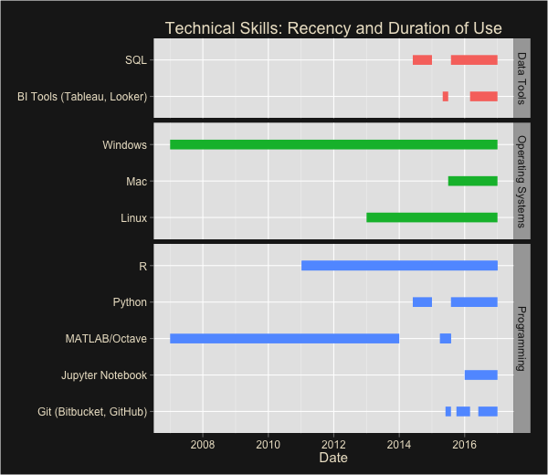

Alex Trickey
Data Scientist
Summary
While completing her PhD in
Quantitative Psychology,
Alex became an expert in Statistics through her studies, research and teaching. Since joining
OnPrem’s Data and Analytics Practice as a Consultant, she has gained experience working with
new technologies and with data that is larger and less structured. In future positions, Alex
hopes to combine her academic and industry experiences by working with a team to build production
quality models and continuing to use data to yield actionable insights.
Skills
Overview
- Statistics and Machine Learning
- Data 'Wrangling' and Statistical Programming
- BI/Data Visualization
Experience with Various Technical Tools (Last 10 years)

Projects
University of California, Los Angeles - Doctoral Dissertation
Jan 2013 - March 2015
- Developed the statistical theory and
computational algorithms
that partially address a known multivariate modeling issue
- Analyzed the performance of the theory/algorithms in simulations and applied them to real data
- Presented results to a committee of statisticians and psychologists
- Tools and Tech: R, EQS
University of California, Los Angeles - Master's Thesis
June 2009 - Dec 2010
- Implemented and applied several heuristic optimizers (e.g. genetic algorithms,
particle swarm optimizers, etc.) to select features and weights in a constrained
linear modeling task
- Results identified the best performing algorithms and circumstances in which the
constrained models might be preferred over the usual unconstrained models
- Tools and Tech: Matlab
Experience
OnPrem Solution Partners, LLC, Los Angeles CA - Consultant
Sept 2015 - Present
- Wrote Python scripts to normalize and match titles from distinct systems
allowing film/fan data to be linked with ticket sale data
- Helped create, update and standardize data documentation and ERDs
- Built dashboards to provide insight into application performance leading
to faster bug detection and order completion
- Automated data exploration and validation procedures using Python, R and Dynamic SQL
- Performed data modeling and wrote reports for an interim reporting system
- Tools and Tech: Python, Redshift, Teradata, DB2, S3, ER/Studio, MySQL,
Tableau, Bash, Google Cloud Platform, Apache Hive/Hadoop
University of California, Los Angeles CA - Research Mentorship Participant
June - Sept 2011
- Awarded funding to work on a machine learning problem in neuroimaging
- Results determined which of several methods could most accurately estimate the
number of independent neurological systems contributing to the (highly noisy)
fMRI signal
- Tools and Tech: Matlab
University of California, Los Angeles CA - Academic Instructor
June 2010 – August 2015
- Roles included Lecturer, Teaching Fellow, Teaching Associate, and
Teaching Assistant
- Class/section sizes varied from 18 to 250 students depending on
the course
- Responsibilities
- Content construction (e.g. designing lectures, labs, exams
and assignments)
- Presentation and instruction (e.g. leading lectures, labs, and
discussion sections, and holding office hours)
- Course administration (e.g. coordinating teaching assistants,
grading assignments, maintaining grade books, assigning course
grades, etc.)
- Selected Courses
- Introduction to Statistics
- Psychological Statistics
- Research Methods in Psychology
- Advanced Psychological Statistics A, B, and C
- Behavioral Neuroscience
Chapman University, Orange CA - Adjunct Professor
Sept 2013 - May 2014
- Taught "Critical Thinking" (i.e. effective evaluation of arguments
and evidence leading to scientifically informed decisions)
- Provided constructive feedback as students learned to express their
reasoning orally and in writing
Clarkson University, Potsdam NY - Cognitive Neuroscience Research Assistant
Aug 2008 - May 2009
- Used neural networks to model event-related EEG data to study neurological
processing of tactile stimuli
- Tools and Tech: Matlab
Clarkson University, Potsdam NY - Teaching Assistant
Jan 2009 - May 2009
- Led weekly Calculus III (Multivariate Calculus) discussion sections to
review examples of the topics covered in lecture
- Had a lot of fun
Education
PhD, Quantitative Psychology, UCLA, Los Angeles CA
- Psychology Department Fellowship, 2014
- Graduate Summer Research Mentorship Award, 2011
- First-Year University Fellowship, 2009
Dual BS, Mathematics, Psychology, Clarkson University, Potsdam NY
- Psi Chi, International Honor Society in Psychology, 2008
- Pi Mu Epsilon, National Mathematics Honor Society, 2008